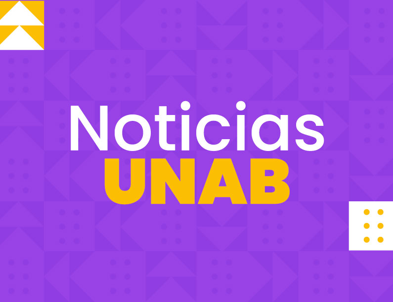
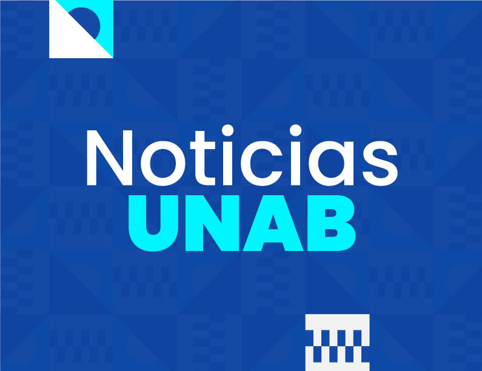

Servicios
Servicios
| Biblioteca | Web de Biblioteca SIBU Recursos digitales |
Reserva de Espacios | Disponibilidad de Aulas Espacios académicos Espacios deportivos y culturales |
e-Learning |
Tema Pregrado Tema Posgrado Canvas Sistemas Cosmos Sistema Apolo |
Reserva de equipos | Jardin CSU Caldas CPA Casona |
Soporte | Clic Bienestar en linea Agenda tu cita virtual de nuevo |
|---|
| Inscripción de cursos | Selección de Cursos Menores Nuevo Turnos Inscripción de Informática Vacacionales e Intensivos Proyección de Cursos Informática Cursos Inscritos Descargar Certificado de Notas Formulario Practicantes |
Información del Programa | Profesores Cronogramas Académicos |
Trámites Académicos | Actualización de EPS Registro de referidos Reconocimiento de cursos Solicitud de grado Solicitud de Certificados nscripción a elecciones |
|---|
| Trámites Financieros | Apoyo Financiero Directo Apoyo Financiero Externo Cronograma fechas de pago Primer Ingreso Cronograma fechas de pago Continuos |
Solicitud Becas Fondos Solicitud Becas y descuentos Renovación de Créditos Icetex Cupones Devoluciones |
Tarifas Reglamentos y Resoluciones |
Comunicacion e identidad UNAB Actualización de Datos Personales |
|---|

|  | fecha 20-MAY-24 Cursos vacacionales intersemestrales de inglés para estudiantes pregrado profesional UNAB |
 | fecha 17-MAY-24 Prepárate: se acercan los torneos deportivos para estudiantes de posgrados |
| fecha 16-MAY-24 Convocatoria de exploración de interés docente |
fecha 16-MAY-24 Actualización de EPS para estudiantes de Medicina, Enfermería y Psicología |
||
| fecha 08-MAY-24 Examen diagnóstico de inglés para estudiantes pregrado profesional |
fecha 07-MAY-24 Festival Oriental en el Hostal UNAB |
||
| fecha 07-MAY-24 Universidad UNAB liderará proyecto de Vocaciones Científicas en Santander |
fecha 06-MAY-24 Pruebas de informática para estudiantes continuos (viernes 7 de junio de 2024) |